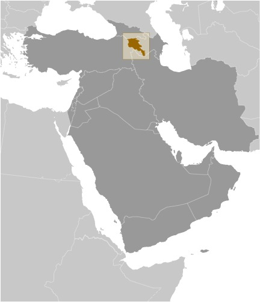
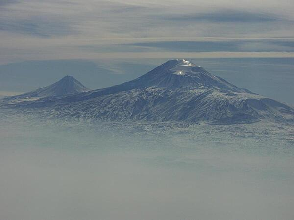

Article on Armenia
Description of Armenia
Armenia is a mountainous country in Southwestern Asia, bordering Azerbaijan,Georgia, Iran, and Turkey. It's located in the Lesser Caucasus Mountains and has fast-flowing rivers.
Geography
Area
| Total Area | Land Area | Water Area |
|---|---|---|
| 29,743 sq km | 28,203 sq km | 1,540 sq km |
Climate
- highland continental
- hot summers
- cold winters
Natural Resources
- gold
- copper
- molybdenum
- zinc
- bauxite
People and Society
Population
Population total for the country is 2,976,765 inhabitants.
Ethnic Groups
Armenia is overwhelming Armenian with few other ethnic groups in the country. It is considered a homogenous state like Sweden or Finland.
Population Statistics
| Armenian | Yezidi | Other |
|---|---|---|
| 98.1% | 1.1% | 0.8% |
Languages
The official language of the country is Armenian. Other languages are present in the country such as Kurmanji (spokenby a Yezidi minoriry), and Russian since Armenia is a former Soviet state.
Language Statistics
| Armenian | Kurmanji | Russian/Other |
|---|---|---|
| 97.9% | 1% | 1.1% |
Religions
Armenian is a predominantely Christian state. Over 90% of the country believes in some form of christianity. There is a minority relgious presence, but it is small compared to the Christian faith inside the country.
Religion Statistics
| Armenian Apostolic Christian | Other Christian | Other | None |
|---|---|---|---|
| 95.2% | 1.6% | 0.9% | 0.6% |